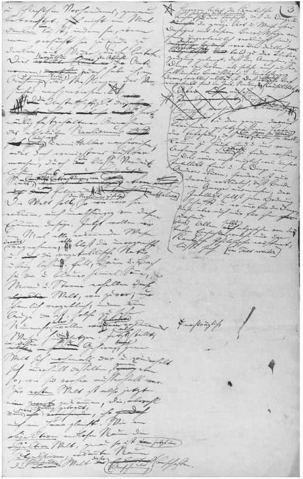

对叔本华而言，人最基本的要素是意志。智性只是第二位的；叔本华将智性解释为生命意志在大脑和神经系统中的一种特殊表现，“只是为意志服务的一个工具”（《作》第二卷，205）。叔本华创造出很多意象来解释智性和意志的关系，他最喜欢的意象是一个视力正常的瘸子被一个身体强壮的盲人扛在肩上。智性是有意识的，是我们观察世界的窗户，但是引导我们行为的驱动力却深藏于精神之中，藏于身体或者说是人这个有机体之中。意志至上论有多种用途，广义上都属于心理或伦理层面。叔本华在某些方面是20世纪无意识的观点和性影响人的行为等观点的先行者，两者均源于他对智性和意志的对立性的思考。他的伦理学也依托于这样一种观点：使个体成为他自身的那个核心并不是智性，而是永久的、潜在的意志。
我们再次发现，个体对他或她的身份意识是不确定的。自我是介于意志和智性之间的混合体。尽管从客观上讲，智性也是意志的一种表达，但在我们自己的自我意识中，我们能够将智性区分出来，作为我们被有意识的知觉和思维所占据的那一部分。这一分裂的主观征候表现为我们可能意识到的多种冲突和控制：智性与意志之间的一种“表现在人身上的奇特的相互作用”（《作》第二卷，207）。例如，意志是我们身上相对原始的部分，还没有先进到以不同于真实信念的方式对假想的观念作出反应：

图7《作为意志和表象的世界》第二卷手稿摘录
另一方面，我们对世界的普通体验中充斥着来自意志的肯定或否定意义：
我们倾向于不以“纯粹”的方式来使用智性。我们的经验和思维面对物质世界的方式是由意志驱动的——对叔本华来说，这进一步证明了他的意志是人类最根本因素的观点。他举出很多别的例子来说明意志持有偏见：
任何希望把大脑描述为一个纯粹知觉和推理的中心的人，都必须推翻叔本华（根据传闻轶事、一般观察及内省）提出的大量反证；他认为我们的经验大部分被符合我们自己目的、本能和情感需求的东西所支配。
叔本华表现非凡洞察力的地方是在他的下意识理论，这是他的意志理论中更重要、更有影响的一个方面。既然意志独立于我们对现实的有意识再现而运行，它就可以被归为欲望、目的和感情，这些虽不是思维主体有意识怀有的，但却能控制他或她的行为。他举出一个例证（他称之为“琐碎”、“荒唐”，然而“触目惊心”），我们计算自己的财务状况，“经常会犯一些对我们有利的错，而不是对我们不利的错；这样做确实不掺杂一丁点不诚实的意图，只是我们无意识中有一种希望减少债务 、增加存款 的倾向”（《作》第二卷，218）。但这只是一个普遍原则的小范例。叔本华说，智性时常被排除在“它自己意志的秘密决定”之外。我不是有意识地决定我希望在一个特定场合发生什么，但是看到某种结果，我会感到“一种欢欣鼓舞，一种难以抗拒的喜悦扩散至我的全身……我自己也很惊奇……直到这时我的智性才认识到意志早已牢牢地控制了这个计划”（《作》第二卷，209）。
意志在这里是个体心智的一部分，尽管它始终处于有意识的智性视野之外，它仍然采取态度，引导公开的行为。叔本华甚至认识到一种类似于弗洛伊德许久之后提出的压抑论的过程：
在另一段有趣的段落中，叔本华认为这种机制导致某些形式的精神失常：
叔本华夸大其词地说，他之前所有的哲学家都“忽视”了性爱［“我是前无古人”（《作》第二卷，533）］，而他尤其对柏拉图的贡献不以为然，这是没有根据的（《作》第二卷，532）。然而，能如此直言不讳地谈论性，把性作为自己哲学的重要基石，叔本华又一次显示了他非凡的前瞻性。在他看来，性时刻存在于我们的思想中，“这一公开的秘密在任何地方都不能被清楚地提出，但却在所有的地方一直被认为是头等要事”（《作》第二卷，571）。“它几乎是人类所有努力的最终目的；它对最重要的事务产生不利的影响，时时干扰最严肃的工作。”（《作》第二卷，533）以上这些在叔本华的理论中毫不为奇。性交的冲动是人类存在的真正核心，这种本能是生命意志在我们身体中最直接、最强有力的表现：“生殖器，”他乐于这样告诉我们，“是意志的焦点。”
叔本华将本能解释为这样“一种行为，似乎与一种目的或目标的概念一致，但又完全没有这样一种概念”（《作》第二卷，540）。性行为和性解剖以一种类似目的的方式指向生殖。当然，生殖有时也可能是有意识的目的，但在他或她的行为表现出本能这个意义上，个体有意识的目的就无关紧要了。叔本华认为，性活动及其复杂、广泛的环境所指向的生殖“目的”实际上就是人类这个物种的一个“目的”，是一种自我生产的内在动力，个体只是充当其载体而已。个体对性目标孜孜以求，反映了这一潜在的物种目的的重要性。
所以叔本华认为，个体性行为完全听命于一种非人的力量。对此他最惊人的提法是，一个尚未孕育的后代的生命意志将一对男女伴侣吸引到一起。他们认为自己的行为是完全出于自己的兴趣，出于对另一个个体的个人渴望，这种观点是一种“妄想”（《作》第二卷，538）。这种妄想本身是“自然可以达到它的目的”的一种方法。由此看来，世世代代诗歌中颂扬的“对爱情的渴望”，其实是情人的身外之物，于是也就具有个体难以控制的强大力量：
叔本华还相信，一旦物种的目标在情人间完成，他们的狂喜与妄想最终一定会消退：
当然，个体会继续感到性欲是他们自身对某一个特定的人的欲望，他们会意识到这个人的身体和精神特征。叔本华列出一个详尽的男人大概希望女人具有的特征清单（合适的年龄、健康、骨架匀称、丰满、姣好的面容——以此为序）和女人大概希望男人具有的特征清单（合适的年龄、力量、勇气）。但是，抛开这样的细节不谈，产生吸引力的所有特征都可用一种方式来解释：它们都产生于无意识的选择原则，物种意志通过这些原则发挥作用，确保下一代的特征。虽然性交的意图明明不是为了繁殖后代，叔本华仍坚定地从生命繁殖本能的角度解释主观的吸引力。甚至连同性恋现象也不能阻止他作如是观：他认为，这种广泛存在的情况一定是“以某种方式从人类本性自身生发出来的”，虽然他对同性恋的解释多少有点孤注一掷的意味。他认为，很年轻和很年长的男性精液有缺陷，他们会依照本能采取非繁殖的方式排放精液，因此他们仍然会促进尽可能繁殖最佳后代的“物种意志”。
有人可能会对叔本华的另一信念感到吃惊：我们从母亲那里继承的是智性，从父亲那里继承的是意志。很少有哲学家认为智性是一种女性特质，而情感能力却是男性的。叔本华确信他的主张是有经验证据的，但他又提出一个观点，该观点表现出他的本色。意志是“真正的内在存在、核心、根本要素”，而智性是“次要的、偶发的，是那个物质的意外产物”（《作》第二卷，517）。因此，就此推论，我们应该指望更强大的、更有繁殖力的这一性将意志灌输给它的后代，而母亲“不过是孕育的原则”，负责的仅仅是次要的智性。此处的重点是确保女性是表面的、次要的，而男性是实质的、根本的、首要的。由父亲那里继承的是“道德本质”、“性格”、“心灵”。智性由女性产生的观点，其实是叔本华形而上的意志至上论和他认为女性一定从属于男性的相当传统的偏见相结合的产物。
叔本华歧视女性的观点集中体现于短文《论女人》（《附录与补遗》第二卷，614—626），具有极强的腐蚀性，也使他背负些许骂名。他的观点在多大程度上使他从前人和同辈人中脱颖而出，这一点是有争议的。一方面，他也许特别值得注意，因为他试图将性别差异赋予这种形而上的意义，特别重视性在人类生命中的地位；另一方面，也可以认为他实际的观点在当时是相当普遍的。毋庸置疑的是，他在该问题上的措辞非常激烈：
有几种美德可补偿女人理性的不足。叔本华认为女人更具人性的慈爱之心，而慈爱具有最高的道德价值；他还认为女人比男人更脚踏实地，更现实（又是智性在起作用）；但他确信女人不是很善于推理，性格浅薄。她们的兴趣是“爱、征服、衣着、化妆品、跳舞”；她们把一切都看做赢得男人欢心的手段；掩饰是女人的天性，“如同自然为狮子装备了爪子和牙齿，为大象和野猪装备了长牙，为野牛装备了尖角，为乌贼装备了染水的墨液”（《附录与补遗》第二卷，617）。女人也许有天赋，但艺术天才很明显只能是男性：“一般来说，女人现在是、将来也是彻头彻尾、不可救药的俗人。”（《附录与补遗》第二卷，620—621）偶尔，人们能瞥见小说家、社交名流、他母亲约翰娜·叔本华的肖像：
混杂着个人辛酸的传统的男性情感——其结果很难有什么启发性。但是，任何对叔本华哲学的解释都不应该压制这些对他十分重要的观点。
我们已经知道，叔本华认为意志是我们内部最重要的因素，而智性仅仅是次要的、“偶发的”。由此可见，意志通常扮演着一种非人的角色，一种大于个体的力量，依附于人类或整个世界，在每个个体身上平等地表现出来。但是，叔本华也相信每个人都有与众不同的性格。在这一点上智性仍然是次要的。标志一个人作为个体的独立身份的真正核心，并不是智性能力和特点，也不是意识的连贯性。
每个人的性格在叔本华看来都是独特的，尽管由于我们都属于同一物种，区别有时会很细微。个体性格在解释和预知行动时是很重要的。行动产生于动机，但动机必须与施动者的性格联合起来。相同的客观条件被不同的人以相同的方式感知和理解，可能导致他们采取截然不同的行动。对于巨额行贿，有些人会接受，有些人会婉言谢绝，还有人会将你移交官方。叔本华认为，动机（即智性认识到的事物的外部状态）在这三种情况下有可能相同，而且智性本身可以说也在以完全相同的方式工作。但是不同的是性格。如果我们彻底了解每个人的性格，以及他们所抱的所有动机，我们就能不差分毫地预知他们的所有行动。叔本华钟爱的另一条拉丁语格言就是operari sequitur，“行动源于存在”：我们是 什么部分地决定了我们怎么做。这一原则无异于我们借以预知受到相同影响的不同自然物的不同行为的原则：“同一动机对不同人的影响完全不同；好比阳光赐予蜡白色，让氧化银呈黑色，所以热使蜡变软，使陶土变硬。”（《论意志的自由》，50）这一性格理论对自由、责任、道德都有影响，这一点我们后面将会发现。
叔本华将性格看做一个人的“存在”，一种有别于这个人所有行动的总和的东西。行动皆源于存在，每一个行动都带有它所属的这个人的烙印。这可能使性格听起来很神秘，但叔本华向我们保证，我们只能通过经验表现在他人甚至我们自己身上来认识性格——实际上就像我们了解蜡或氧化银的特性那样。我们观察了很多行为，经过一段时间，才逐步了解一个人有多诚实，有多勇敢，有多少同情心。对我们自己也是这样：除非看到我们的行动如何进展，我们可能对自己的性格特征有很多误解。所以叔本华说性格是经验性的 。它与我实施的系列行为不同，但只有通过观察这些行为才能被发现。
叔本华认为每个人的性格既是恒定的，又是天生的。我们既不能选择也不能改变我们所成为的那个自己。教育能使我们更好地认识世界和自我，赋予我们更好、更高尚的动机去行动，但是在这些动机驱使下行动的自我其实没有改变：“在一个人的年龄、关系，甚至是知识和观念储备这个变换不居的外壳下，如同蟹隐于壳下一样，隐藏着那个同一而真正的人，他是不可改变、始终如一的。”（《论意志的自由》，51）叔本华认为，我们平常的许多态度都证实了一个观点：我们承担的不仅是一个人的身份，还有他恒定的道德性格。如果我们一直相信某人会如何行动，而结果却令人失望，“我们绝不会说：‘他的性格变了’，而会说‘我看错他了’”（《论意志的自由》，52）。例如，照此观点，我们不会说某人以前诚实勇敢，但是现在狡诈怯懦，而会说他们狡诈怯懦的程度至今才完全显现出来。为了进一步证明性格的恒定性，叔本华举例说，我们多年后从别人的行为方式认出他们仍没有变，而且我们对自己四十年前的所作所为依然有责任感和愧疚感。
从性格是天生的这一论断中，我们又一次发现不应该把人类与自然界其他群体区别对待。不能指望橡树结出杏子来，叔本华说。人类明显具有天生的物种特征。为什么人们如此不情愿接受个体层面存在天生的勇气、诚实或邪恶呢？叔本华的证据，虽说不够有力，引导他这样来思考：人类个体出生时并不只是一张白板，等待经验来书写才形成任何性格。在我们能够获得知识或者很好地感知世界之前，我们就是意志生物，对影响我们的事物产生积极或消极的情感反应。即便在这个阶段，人也具有一个基本核心，这个核心并不是由他或她对世界的智性理解来塑造的。
叔本华也提出了习得性格 的概念。特别是在年幼的时候，我们可能无法正确理解我们的性格是什么。我们不知道自己真正喜欢什么，想要什么，也不知道干什么能成功。习得性格是更好的自我了解，这是一个人通过洞察自己真实恒定的性格逐步获得的——这一观点在某些方面使人想起尼采后来的观点：“成为你自己。”但是，这一具有启发性的观点与叔本华的其他思想是相矛盾的。因为给人感觉是在我获得习得性格之前，我可能就开始了有悖于我真实本性的事业——这应该是不可能的，如果我天生的、不变的性格真的决定我的一切行动。
然而有时，叔本华对性格的论述甚至更叫人摸不着头脑。
在此，性格究竟为何并不清楚。一方面，它是独特的，依附于作为个体的自身。另一方面，它“不存在于时间之中”，它“不是形而下的而是形而上的”，甚至在个体死亡，他或她的主体意识消逝之时，仍“保持着完好的状态”。坦率地说，问题在于：我的“真实自我”，或者说“我内在本质的核心”，是依附于我这个有限个体，还是那个完全超越时空和个体性的物自体？如果是前者，那么它就既不可能独立于时间之外，又不能不受我自身死亡的影响。如果是后者，那么它就根本不能用来解释我的个人身份。叔本华似乎跌进了一个基础性的难题之中。但是从某个方面来说，他的迷惑背后又有更为深奥的意味。因为他最终想宣称，看起来对我们如此重要的个性，不仅是痛苦的源泉，而且是某种错觉：“实际上，所有的个性归根结底只是一个特别的错误，虚妄的一步，一个最好是不应该存在的东西。”（《作》第二卷，491—492）《作为意志和表象的世界》第三、第四卷——我们下面要谈的这部巨著的后半部分——将探索逃避个体性，逃避位于我们核心部分的意志的可能性。